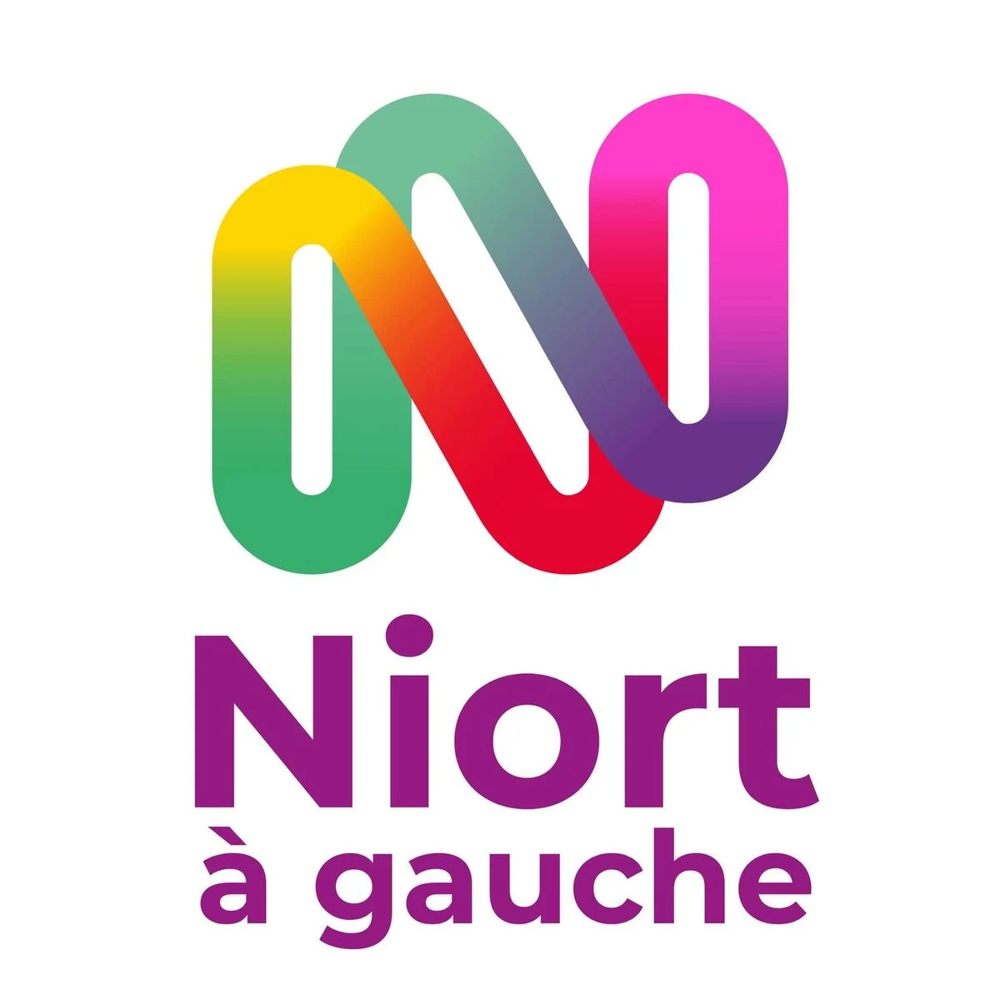

Publication sur X
Municipales 2026. Notre appel à voter Niort à Gauche
Date de publication sur X · 13 mars 2026
Texte de la publication sur X
Dimanche se décidera l’avenir de Niort.
Le choix du commun est le vote Niort à Gauche ! https://t.co/kyAAxnCWcm

Sources
PCF 79 · @79Parti sur X · AR-0005-TW-2032586066423673009
À lire aussi · Sénatoriales 2026. Le PCF 79 présente Frédéric Giraud et Valérie Mazé
Publications associées
- Une première réunion pour préparer la campagne de Niort à gauche · Campagne de Niort à gauche sur Facebook
- Municipales à Niort. Karl Forterre présenté par le PCF 79 · Campagne de Niort à Gauche
- Municipales à Niort. Maëlle Lebeltel présentée par le PCF 79 · Campagne de Niort à Gauche